One man.
Many rooms.
Civic educator. Community activist. Combat veteran. Championship coach, USA and Liberia. Program coordinator. Public speaker. Founder.
Born in Newark. Raised across four cities. First-generation American with Liberian roots. Every lane below is receipts, not résumé talk.
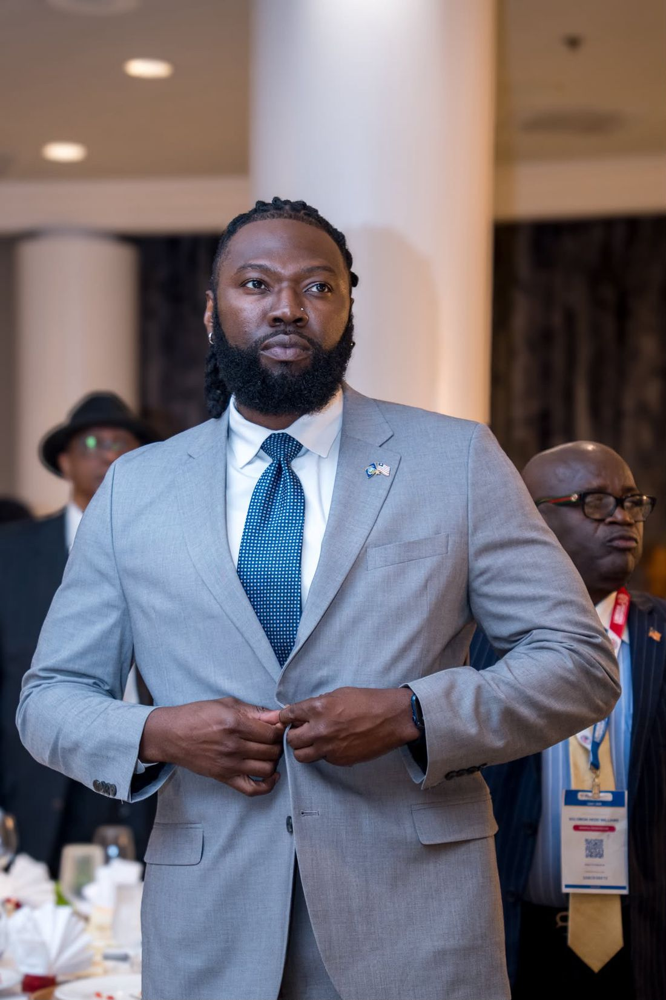
Ten-plus years teaching, from DC to LA
Educator, junior admin, and CTE instructor. A decade-plus helping students get their reps in, and now building study systems so the learning follows them home on their phones.
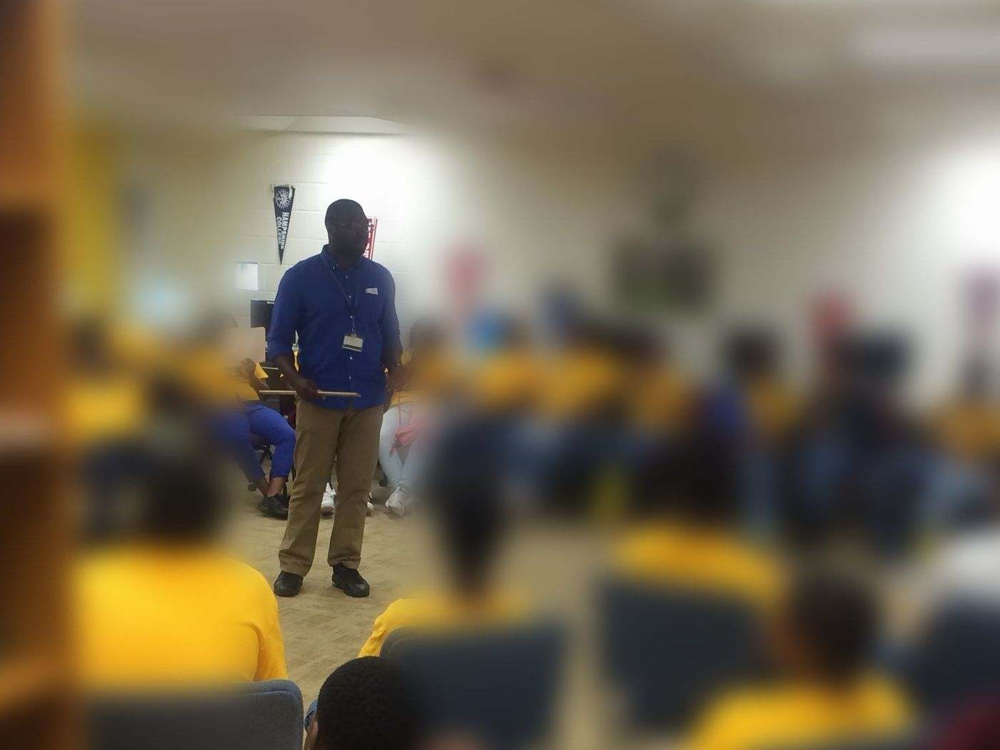
Championship coach, two continents
February 20, 2019: the Alain LeRoy Locke Lady Saints won the CIF Los Angeles City Section Division IV Championship, the school's first city title in more than three decades. Head coach: Lawrence Totimeh.
2026: D-Rockas, the women's team he coaches and helps run in Liberia, won the Liberia Basketball Association women's championship, closing out the Flames 61–58 in Game 5.
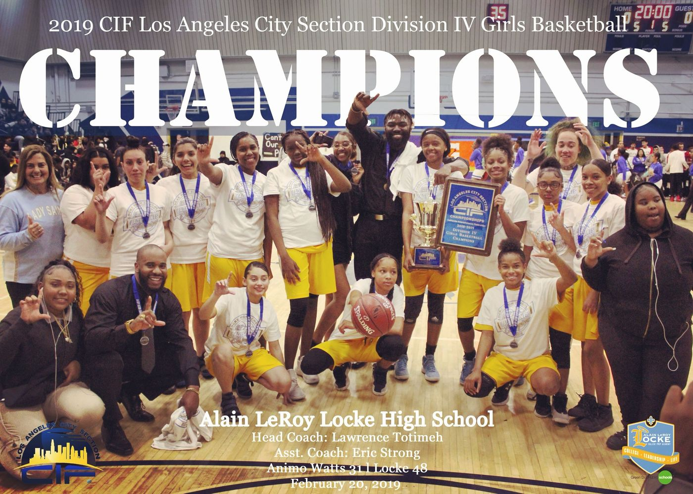
Combat veteran
U.S. Army. Served in Baghdad, Iraq in 2011 under Operation New Dawn as a door gunner with the 224th Aviation. A decorated soldier and an honorable leader.
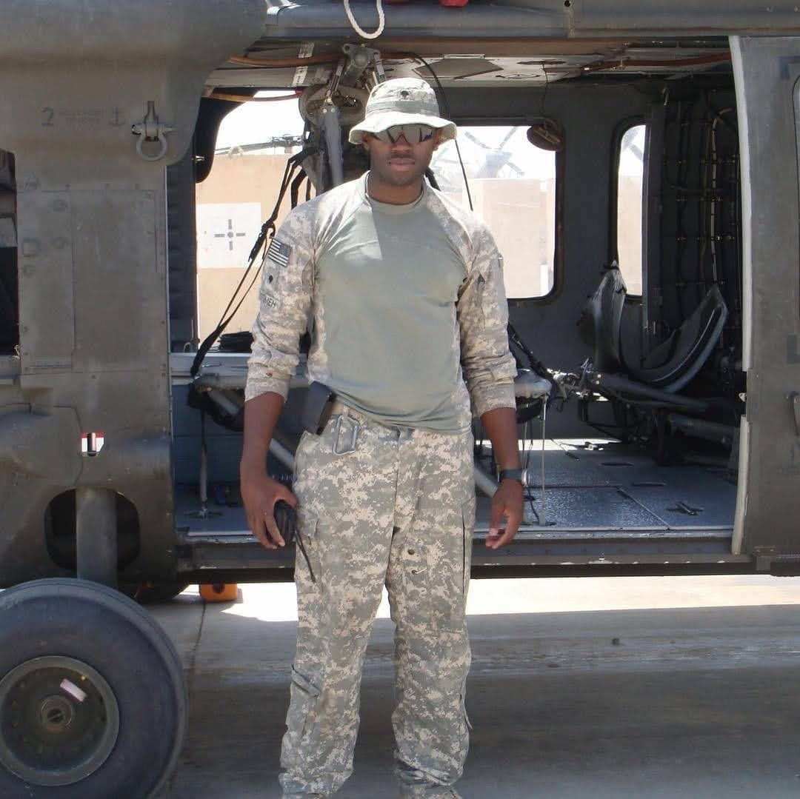
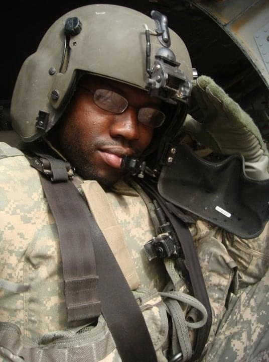
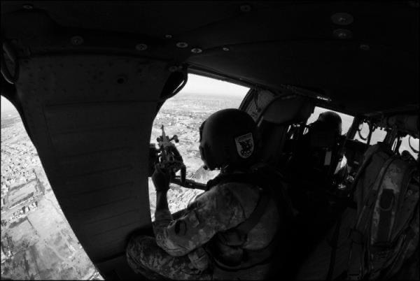
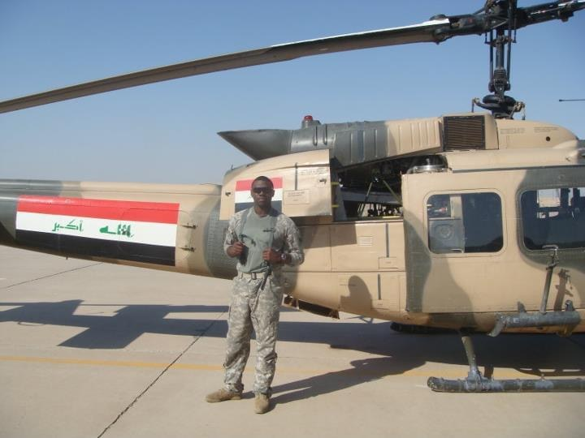
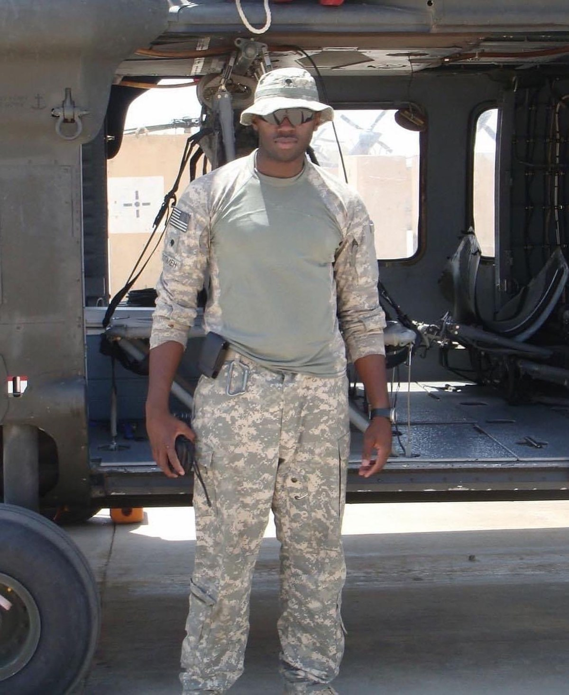
Back to Liberia
In 2020 he founded Liberia Forward, putting agriculture, infrastructure, and digital skills to work in the country his parents came from. Then he took the TEDx stage in Monrovia to talk about it.
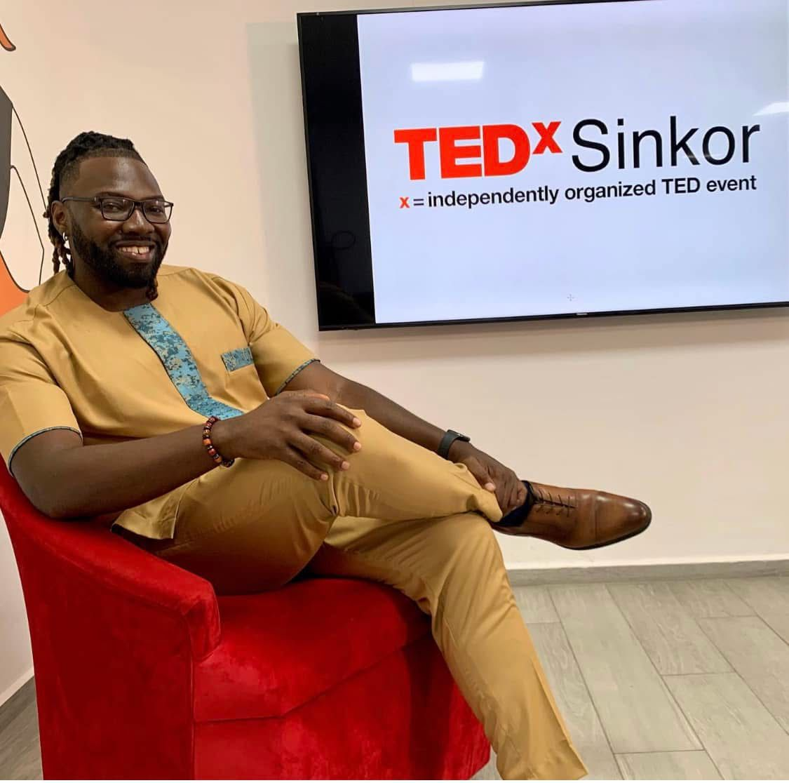

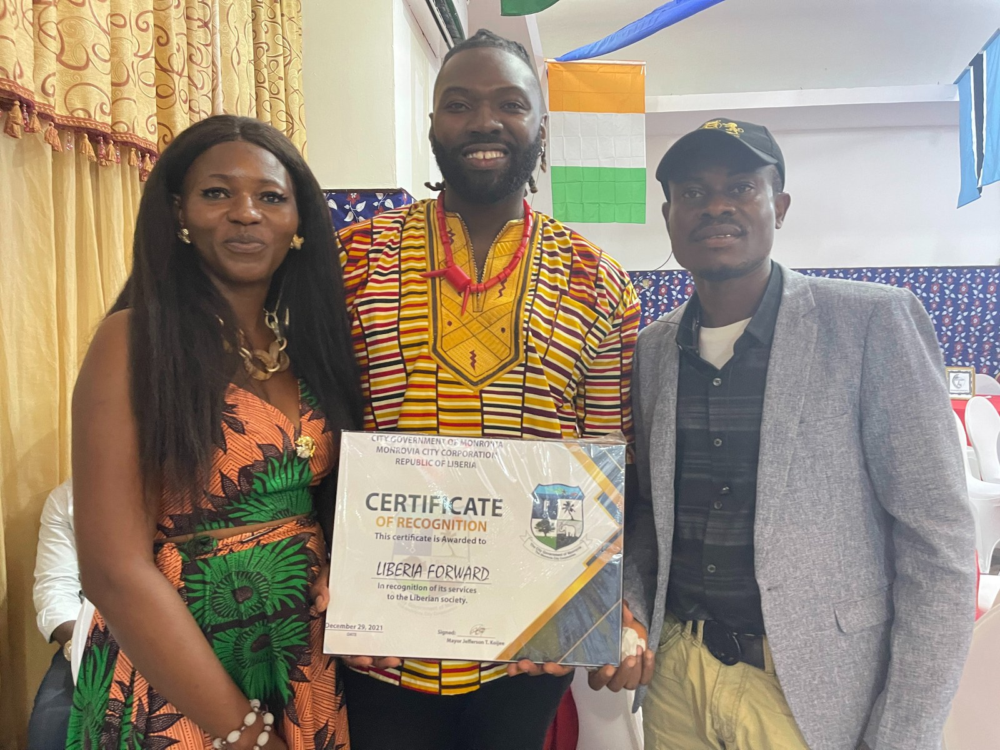
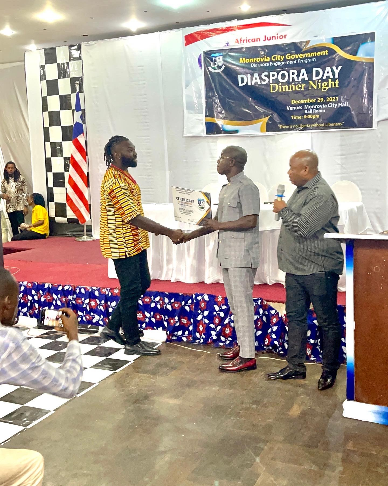
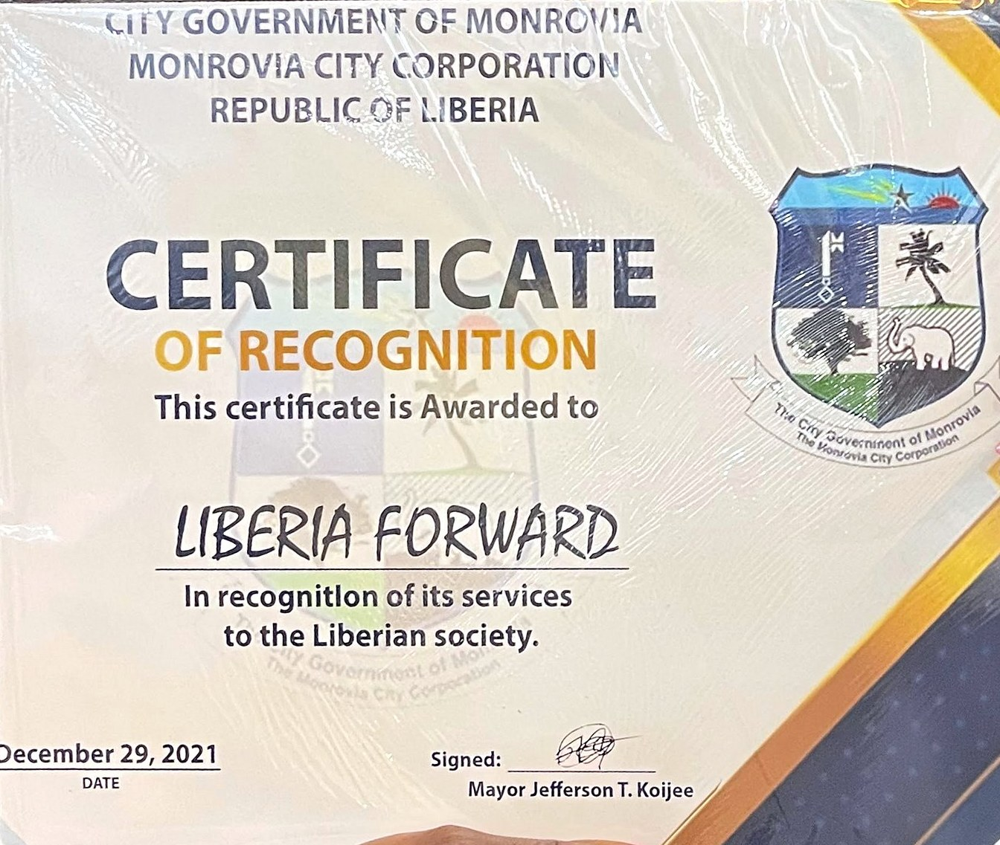
DMV City Slickerz
Started with his friends, the Slickerz turned line dancing into a DMV movement: free classes at Alethia Tanner Park, day parties, and stages from National Harbor to the H Street Festival in front of thousands.
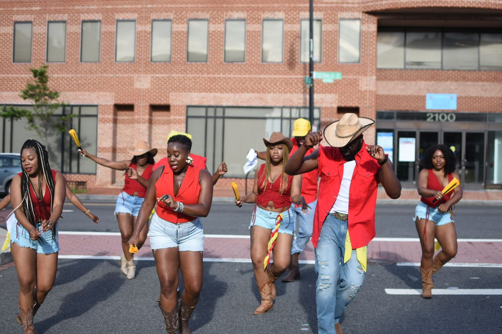
The host who runs the room
Weddings, banquets, and festivals across the DMV: grand entrances, toasts, transitions, and the energy in between. Stages from the Smithsonian NMAAHC to California to West Africa.
See hosting packages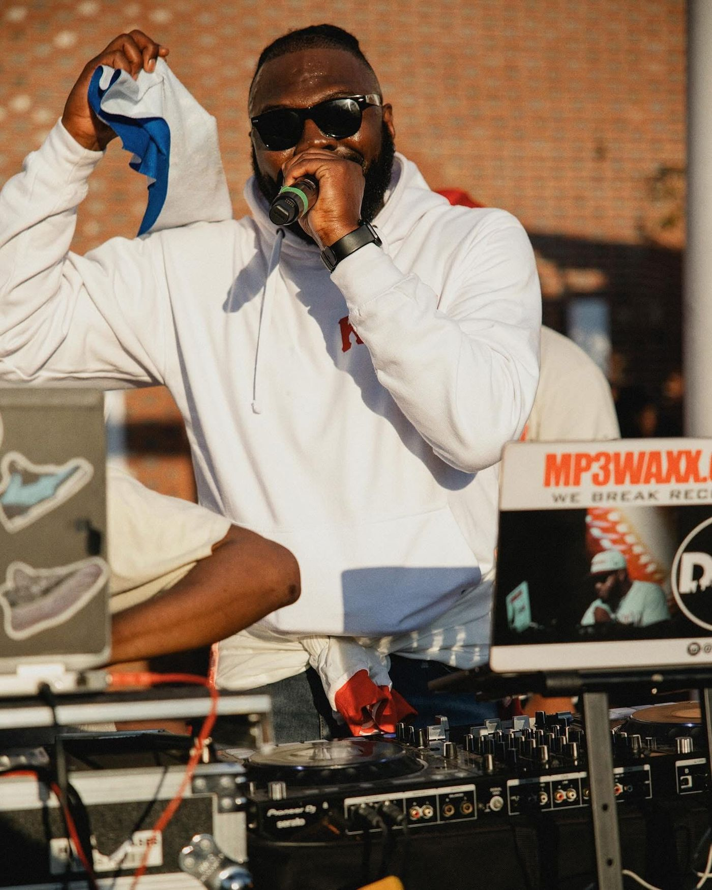
Serving where he lives
During the 2020 protests in Los Angeles, his photo led a Los Angeles Times investigation into police tactics, images of him marching were featured by The New York Times, and footage aired on ESPN's First Take. He fights for human rights while educating and building community at the same time.
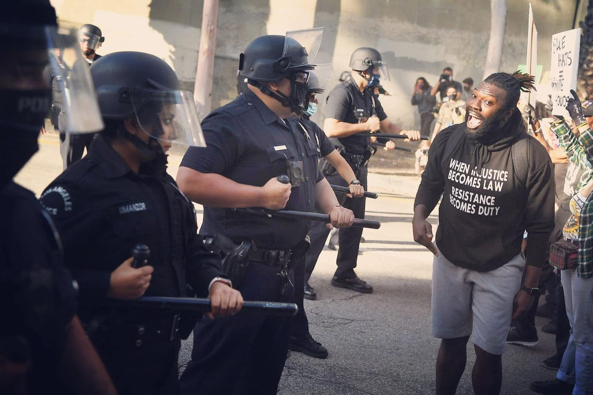
The School of Law
Plain-language lessons on how the justice system works, taught one real Mississippi case at a time: civil lawsuits, discovery, probable cause, new evidence, and the federal path. 1,000+ subscribers on YouTube and growing. After the lessons comes The Community: learn the law, document, act.
Lawrence is an educator, not an attorney.
Watch on YouTubeThe timeline
Bring this energy to your room.
Talks, workshops, hosting. Tell him the date, the venue, and the room.
Book Agent KodakGet in touch